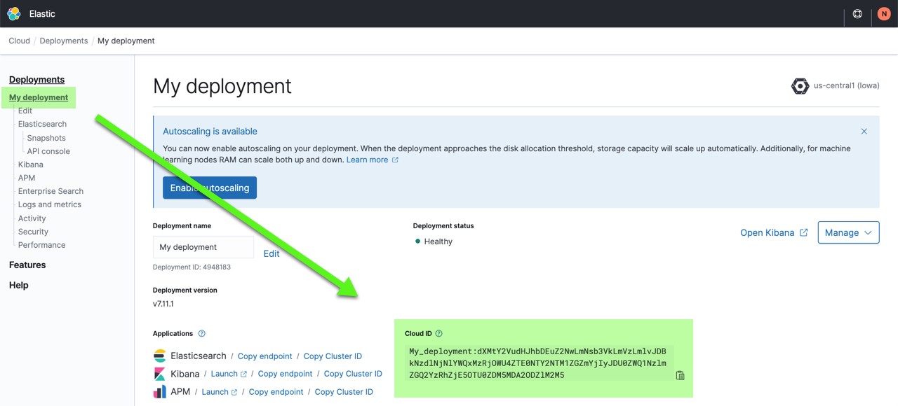
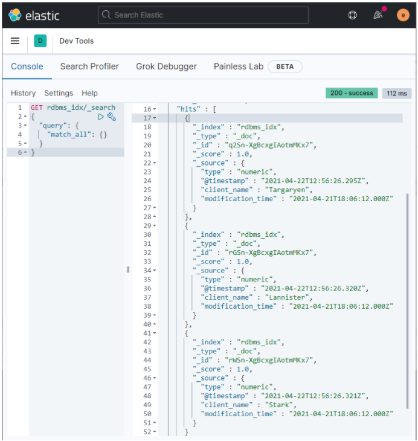

Ingest data from a relational database into Elastic Cloudedit
This guide explains how to ingest data from a relational database into the Elastic Cloud through Logstash and the JDBC input plugin. It demonstrates how Logstash can be used to efficiently copy records and to receive updates from a relational database into Elasticsearch.
The code and methods presented here have been tested with MySQL. They should work with other relational databases.
The Java Database Connectivity (JDBC) input plugin enables you to pull in data from many popular relational databases including MySQL and Postgres. Conceptually, the Logstash JDBC input plugin runs a loop that periodically polls the relational database for records that were inserted or modified since the last iteration of this loop.
This document presents how to:
Time required: 2 hours
Prerequisitesedit
For this tutorial you will need a source MySQL instance for Logstash to read from. A free version of MySQL is available from the MySQL Community Downloads site.
Get Logstash and Elasticsearch Serviceedit
- Get a free trial.
- Log into Elastic Cloud.
- Click Create deployment.
- Select Elastic Stack, leave it at the I/O optimized default, and give your deployment a name.
- Click Create deployment and save your Elastic deployment credentials. You will need these credentials later on.
-
You also need the Cloud ID later on, as it simplifies sending data to Elastic Cloud. Click on the deployment name from the Elastic Cloud portal or the Deployments page and copy down the information under Cloud ID:

Prefer not to subscribe to yet another service? You can also get Elasticsearch Service through AWS, Azure, and GCP marketplaces.
- Download and unpack Logstash version 7.12.0 on the local machine that hosts MySQL or another machine granted access to the MySQL machine.
Get the MySQL JDBC driveredit
The logstash-integration-jdbc plugin does not include any database connection drivers. You will need a JDBC driver for your relational database for the steps in the later section Configure a Logstash pipeline with the JDBC plugin.
- Download and unpack the JDBC driver for MySQL from https://dev.mysql.com/downloads/connector/j/.
- Make a note of the driver’s location as it’s needed in the steps that follow.
Prepare a source MySQL databaseedit
Let’s look at a simple database that from which we will import data and send it to the Elastic stack. This example uses a MySQL database with timestamped records. The timestamps enable you to easily determine what’s changed in the database since the most recent data transfer to the Elastic stack.
Consider the database’s structure and designedit
For our example, let’s create a new database ‘es_db‘ and table ‘es_table‘ as the source of our Elasticsearch data.
-
Run the following SQL statement to generate a new MySQL database with the needed structure:
CREATE DATABASE es_db; USE es_db; DROP TABLE IF EXISTS es_table; CREATE TABLE es_table ( id BIGINT(20) UNSIGNED NOT NULL, PRIMARY KEY (id), UNIQUE KEY unique_id (id), client_name VARCHAR(32) NOT NULL, modification_time TIMESTAMP NOT NULL DEFAULT CURRENT_TIMESTAMP ON UPDATE CURRENT_TIMESTAMP );
Let’s explore the key concepts from the above SQL snippet:
- es_table
- Stores the data that’s sent to Elasticsearch. You can use any table name you want.
- id
- This is the unique identifier for records. "Id" is defined as both a PRIMARY KEY and UNIQUE KEY to guarantee each "id" only appears once in the current table. This is translated to "_id" for updating or inserting the document into Elasticsearch.
- client_name
- This is the data that we’re ultimately ingesting into the Elastic stack. For simplicity, our example only consumes a single data field into Elastic. However, you can send as many fields as is necessary.
- modification_time
- This field’s type is TIMESTAMP. Any insertion or update of individual record updates this value. In later sections, we use this timestamp to determine what’s different since the last transfer to Elasticsearch.
-
Consider how to handle deletions and how to notify Elasticsearch about them. Often, deleting a record results in its immediate removal from the MySQL database. There’s no record of that deletion. The change isn’t detected by Logstash, so that record remains within Elasticsearch.
There are two possible ways to address this:
- You can consider using "soft deletes" within your source database. Essentially, a record is 1st marked for deletion through a boolean flag. Other programs that are currently using your source database would have to filter out "soft deletes" within their queries. The "soft deletes" are sent over to Elasticsearch, where they can be processed. After which, your source database and Elasticsearch must both remove these "soft deletes."
- Periodically clear the Elasticsearch version for the database and then pull everything in fresh.
-
Add three records to your new database:
INSERT INTO es_table (id, client_name) VALUES (1,"Targaryen"),(2,"Lannister"),(3,"Stark");
-
Verify your data with a SQL statement:
select * from es_table;
The output should look similar to the following:
+----+-------------+---------------------+ | id | client_name | modification_time | +----+-------------+---------------------+ | 1 | Targaryen | 2021-04-21 12:17:16 | | 2 | Lannister | 2021-04-21 12:17:16 | | 3 | Stark | 2021-04-21 12:17:16 | +----+-------------+---------------------+
Now, let’s go back to Logstash and configure it to ingest this data.
Configure a Logstash pipeline with the JDBC pluginedit
Next, let’s look at the syntax for a sample Logstash input pipeline that utilizes your new JDBC plugin along with the sample MySQL database. The Logstash pipeline implements the code to ingest the previously covered MySQL database. Beyond MySQL, you can use any JDBC supported database you want for your implementation.
- Go to <localpath>/logstash-7.12.0/. Create a new text file with a .conf file extension within this folder (i.e., jdbc.conf).
-
Copy and paste the following code into this new text file. This code creates a Logstash pipeline through a JDBC plugin.
input { jdbc { jdbc_driver_library => "<driverpath>/mysql-connector-java-<versionNumber>.jar" jdbc_driver_class => "com.mysql.jdbc.Driver" jdbc_connection_string => "jdbc:mysql://<MySQL host>:3306/es_db" jdbc_user => "<myusername>" jdbc_password => "<mypassword>" jdbc_paging_enabled => true tracking_column => "unix_ts_in_secs" use_column_value => true tracking_column_type => "numeric" schedule => "*/5 * * * * *" statement => "SELECT *, UNIX_TIMESTAMP(modification_time) AS unix_ts_in_secs FROM es_table WHERE (UNIX_TIMESTAMP(modification_time) > :sql_last_value AND modification_time < NOW()) ORDER BY modification_time ASC" } } filter { mutate { copy => { "id" => "[@metadata][_id]"} remove_field => ["id", "@version", "unix_ts_in_secs"] } } output { stdout { codec => "rubydebug"} }If you are using MariaDB (a popular open source community fork of MySQL), there are a couple of things that you need to do differently:
- In place of the MySQL JDBC driver, download and unpack the JDBC driver for MariaDB.
-
Substitute the following lines in the previous code, including the
ANSI_QUOTESsnippet in the last line:jdbc_driver_library => "<driverPath>/mariadb-java-client-<versionNumber>.jar" jdbc_driver_class => "org.mariadb.jdbc.Driver" jdbc_connection_string => "jdbc:mariadb://<mySQLHost>:3306/es_db?sessionVariables=sql_mode=ANSI_QUOTES"
-
Replace:
-
<driverpath>with the full path to your local JDBC driver .jar file. For example:jdbc_driver_library => "/Users/jimmy/17jdbc-driver/mysql-connector-java-8.0.24/mysql-connector-java-8.0.24.jar" -
<versionNumber>with the version of the MySQL JDBC driver that you downloaded. -
<MySQLhost>with the IP address of your MySQL host. For example,jdbc_connection_string => "jdbc:mysql://127.0.0.1:3306/es_db" -
<myusername>and<mypassword>with your MySQL credentials. The username and password must both be enclosed in quotes.Following are some additional details about the Logstash pipeline code:
- jdbc_driver_library
- This plugin does not come packaged with JDBC driver libraries. The desired jdbc driver library must be explicitly passed into the plugin using the jdbc_driver_library configuration option.
- tracking_column
- Specifies the field "unix_ts_in_secs" (described below) that tracks the last document read by Logstash from MySQL, stored on disk in logstash_jdbc_last_run. This value determines the starting value for documents that Logstash requests in the next iteration of its polling loop. The value stored in .logstash_jdbc_last_run is accessible within the SELECT statement as ":sql_last_value".
- unix_ts_in_secs
- Field that’s generated by the above SELECT statement, and which contains the "modification_time" as a standard Unix timestamp (seconds since the epoch). It’s referenced by the "tracking column" that we discussed. A Unix timestamp is used for tracking progress rather than a normal timestamp, as a normal timestamp may cause errors due to the complexity of correctly converting back and forth between UMT and the local timezone.
- sql_last_value
- This is a built-in parameter containing the starting point of the current iteration of the Logstash polling loop, and it is referenced in the SELECT statement line of the above JDBC input configuration. This is set to the most recent value of "unix_ts_in_secs", which is read from .logstash_jdbc_last_run. This is the starting point for documents returned by the MySQL query that is executed in the Logstash polling loop. Including this variable in the query guarantees that we’re not resending data we already have within Elasticsearch.
- schedule
- This uses cron syntax to specify how often Logstash should poll MySQL for changes. The specification of "*/5 * * * * *" tells Logstash to contact MySQL every 5 seconds. Input from this plugin can be scheduled to run periodically according to a specific schedule. This scheduling syntax is powered by rufus-scheduler. The syntax is cron-like with some extensions specific to Rufus (e.g. timezone support).
- modification_time < NOW()
- This portion of the SELECT is one of the more difficult concepts to explain and therefore it is explained in detail in the next section.
- filter
- In this section, we simply copy the value of "id" from the MySQL record into a metadata field called "_id", which we later reference in the output to ensure that each document is written into Elasticsearch with the correct "_id" value. Using a metadata field ensures that this temporary value does not cause a new field to be created. We also remove the "id", "@version", and "unix_ts_in_secs" fields from the document, as we do not wish for them to be written to Elasticsearch.
- output
- In this section, we specify that each document should be written to the standard output using the rubydebug output to help with debugging.
-
-
Launch Logstash with your new JDBC configuration file:
bin/logstash -f jdbc.conf
Logstash outputs your MySQL data through standard output
stdout, your command line interface. The results for the initial data load should look similar to the following:[INFO ] 2021-04-21 12:32:32.816 [Ruby-0-Thread-15: :1] jdbc - (0.009082s) SELECT * FROM (SELECT *, UNIX_TIMESTAMP(modification_time) AS unix_ts_in_secs FROM es_table WHERE (UNIX_TIMESTAMP(modification_time) > 0 AND modification_time < NOW()) ORDER BY modification_time ASC) AS 't1' LIMIT 100000 OFFSET 0 { "client_name" => "Targaryen", "modification_time" => 2021-04-21T12:17:16.000Z, "@timestamp" => 2021-04-21T12:17:16.923Z } { "client_name" => "Lannister", "modification_time" => 2021-04-21T12:17:16.000Z, "@timestamp" => 2021-04-21T12:17:16.961Z } { "client_name" => "Stark", "modification_time" => 2021-04-21T12:17:16.000Z, "@timestamp" => 2021-04-21T12:17:16.963Z }Logstash’s results periodically display SQL select statements, even when there’s nothing new or modified in the MySQL database:
[INFO ] 2021-04-21 12:33:30.407 [Ruby-0-Thread-15: :1] jdbc - (0.002835s) SELECT count(*) AS 'count' FROM (SELECT *, UNIX_TIMESTAMP(modification_time) AS unix_ts_in_secs FROM es_table WHERE (UNIX_TIMESTAMP(modification_time) > 1618935436 AND modification_time < NOW()) ORDER BY modification_time ASC) AS 't1' LIMIT 1
-
Open your MySQL console. Let’s insert another record into that database using the following SQL statement:
use es_db INSERT INTO es_table (id, client_name) VALUES (4,"Baratheon");
Switch back to your Logstash console. Logstash detects the new record and the console displays results similar to the following:
[INFO ] 2021-04-21 12:37:05.303 [Ruby-0-Thread-15: :1] jdbc - (0.001205s) SELECT * FROM (SELECT *, UNIX_TIMESTAMP(modification_time) AS unix_ts_in_secs FROM es_table WHERE (UNIX_TIMESTAMP(modification_time) > 1618935436 AND modification_time < NOW()) ORDER BY modification_time ASC) AS 't1' LIMIT 100000 OFFSET 0 { "client_name" => "Baratheon", "modification_time" => 2021-04-21T12:37:01.000Z, "@timestamp" => 2021-04-21T12:37:05.312Z } -
Review the Logstash output results to make sure your data looks correct. Use
CTRL + Cto shut down Logstash.
Output to Elasticsearchedit
In this section, we configure Logstash to send that MySQL data to Elasticsearch. We modify the configuration file from section Configure a Logstash pipeline with the JDBC plugin and output it directly to Elasticsearch. We start Logstash to send the data. Afterwards, we log into Elastic Cloud and open Kibana to verify the data.
-
Open the
jdbc.conffile in the Logstash folder for editing. -
Update the output section with the one that follows:
output { elasticsearch { index => "rdbms_idx" cloud_id => "<myDeployment>" ssl => true ilm_enabled => false # api_key => "<myAPIkey>" user => "<Username>" password => "<Password>" } } -
In the new output section, replace:
-
<myDeployment>with the Cloud ID of your Elastic Cloud deployment. -
<Username> and <Password> with the credentials you use to log into Elastic Cloud. Alternatively, you may choose to use an API key to authenticate, as discussed in the next step. In this case, uncomment the
api_keysetting and leave theuserandpasswordsettings commented out (#).Following are some additional details about the configuration file settings:
- index
-
We specify the name of the Elasticsearch index,
rdbms_idx, to associate the documents. - cloud_id
- Specify the ID of your Elastic Cloud deployment.
- ssl
- Enable as Secure Socket Layer (SSL) certificates are in use with your new deployment of Elastic Cloud.
- ilm_enabled
- Enables and disables index lifecycle management within Elasticsearch.
- api_key
- We specify the API key created during step #4 that follows.
-
-
Optional: For additional security, you can generate an Elasticsearch API key through the Elastic Cloud console and configure Logstash to use the new key to connect securely to the Elastic Cloud.
- Log in to the Elasticsearch Service Console.
-
Select your deployment on the home page in the Elasticsearch Service card or go to the deployments page.
Narrow your deployments by name, ID, or choose from several other filters. To customize your view, use a combination of filters, or change the format from a grid to a list.
-
From your deployment menu, click Elasticsearch → API Console.
.Select Post from the drop-down list and enter
/_security/api_keyin the field.Enter the following JSON request:{ "name": "logstash-apikey", "role_descriptors": { "logstash_read_write": { "cluster": ["manage_index_templates", "monitor"], "index": [ { "names": ["logstash-*","rdbms_idx"], "privileges": ["create_index", "write", "read", "manage"] } ] } } }This creates an API key with the cluster
monitorprivilege which gives read-only access for determining the cluster state, andmanage_index_templatesallows all operations on index templates. Some additional privileges also allowcreate_index,write, andmanageoperations for the specified index. The indexmanageprivilege is added to enable index refreshes. -
Click Submit. The output should be similar to the following:
{ "api_key": "tV1dnfF-GHI59ykgv4N0U3", "id": "2TBR42gBabmINotmvZjv", "name": "logstash_api_key" } -
Enter your new
api_keyvalue into the Logstashjdbc.conffile, in the format<id>:<api_key>. If your results were as shown in this example, you would enter2TBR42gBabmINotmvZjv:tV1dnfF-GHI59ykgv4N0U3. Remember to remove the pound (#) sign to uncomment the line, and comment out theusernameandpasswordlines:output { elasticsearch { index => "rdbms_idx" cloud_id => "<myDeployment>" ssl => true ilm_enabled => false api_key => "2TBR42gBabmINotmvZjv:tV1dnfF-GHI59ykgv4N0U3" # user => "<Username>" # password => "<Password>" } }
-
At this point, If we simply restart Logstash as is with our new output, then no MySQL data is sent to our Elastic Cloud index.
Why? Logstash retains our previous
sql_last_valuetimestamp and sees no new changes have occurred to our MySQL database. Therefore there’s nothing to send, as configured within our SQL statement.Solution: Adding
clean_run => trueas a new line in the jdbc input section of ourjdbc.conffile resets thesql_last_valueback to zero. After running it once this way, remove theclean_runline, unless you want this behavior to happen again at each restart of Logstash:input { jdbc { ... clean_run => true ... } } -
Go to Logstash’s installation path and open a new CLI console. Launch Logstash with your updated JDBC configuration file:
bin/logstash -f jdbc.conf
-
Logstash outputs the MySQL data to your Elastic Cloud instance. Let’s take a look in Kibana and verify that data.
- Log in to the Elasticsearch Service Console.
-
Select your deployment on the home page in the Elasticsearch Service card or go to the deployments page.
Narrow your deployments by name, ID, or choose from several other filters. To customize your view, use a combination of filters, or change the format from a grid to a list.
- From your deployment menu, click Kibana → Launch.
- Open the side-menu panel by clicking the three vertical line button.
- Scroll down and expand Management.
- Click Management → Dev Tools.
-
Copy and paste the following API GET request into the Console pane, and then click the Play arrow. This queries all records in the new
rdbms_idxindex.GET rdbms_idx/_search { "query": { "match_all": {} } } -
The Results pane lists the
client_namerecords originating from your MySQL database, similar to those shown below:
Now, you should have a good understanding of how to configure Logstash to ingest data from your relational database through the JDBC plugin. You have some design considerations to track records that are new, modified, and deleted. You should have the basics needed to begin experimenting with your own database and Elasticsearch.